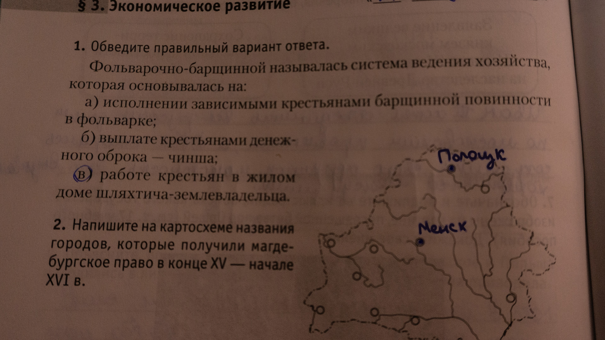
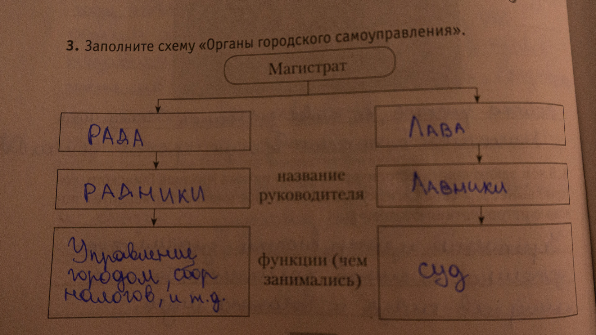

1.Обведите правильный вариант ответа. |
в) |
2.Напишите на картосхеме названия городов, которые получили магдебурское право в конце XV - начале XVI в. |
| 
|
3.Заполните схему "Органы городского самоуправления." |
| 
|
4.Напишите, чем торги в местечках отличались о ярмарок. |
а)В местечках проводились регулярные торги, а в ярмарках - временные и ограниченные события. |
| б)Чтобы следить за качеством продукции и производить быстрее и лучше. |
5.Установите, к какому изхозяйств - натуральному или товарно-денежному - относились фольварки. Свой ответ поясните. |
Фольварки относились к товарно-денежному хозяйству, так как их основная цель - производство сельскохозяйственных товаров для продажи, а не только для личного потребления. |
6. Объясните причинно-следственные связи в "логических цепочках". |
У зерна начала расти цена и ВКЛ было выгодно выращивать зерно и продавать его на запад. Благодоря этому возникли фольварки. |
7.Определите, какая форма земледелия - двуполье или трёхполье - изображена на иллюстрации. Какая из этих форм являлась наиболле производительной? Своё мнение поясните. |
На картинке изображено трёхполье. Оно было более производительным, т.к. у земли было больше времени отдохнуть, и это было очень выгодно. |
8.Определите, какой товар могли перевозить в бочке, на дне которой был сделан такой рисунок. Своё мнение поясните. |
Ткани, металлы, соль. Но скорее всего меха или ткани, т.к. это было самое распространённое. |